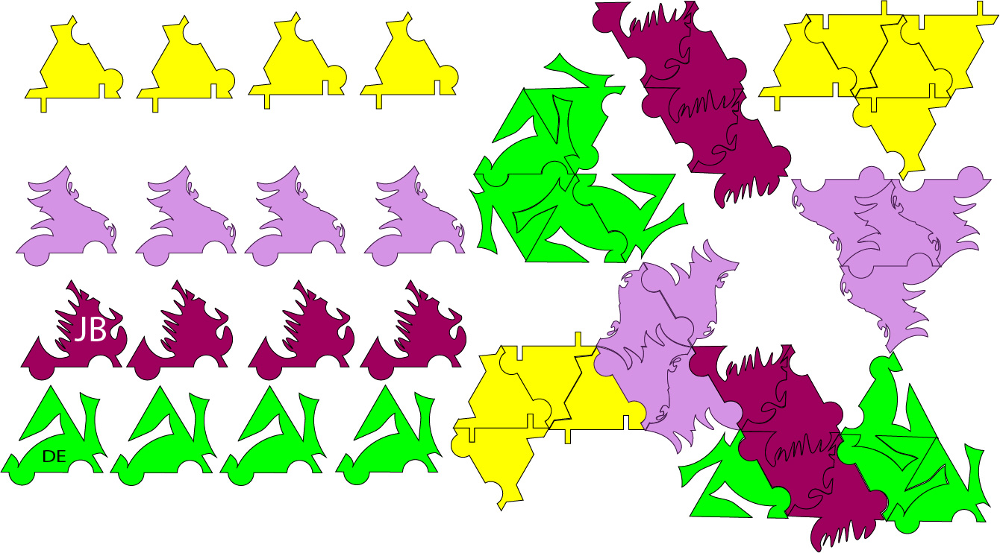
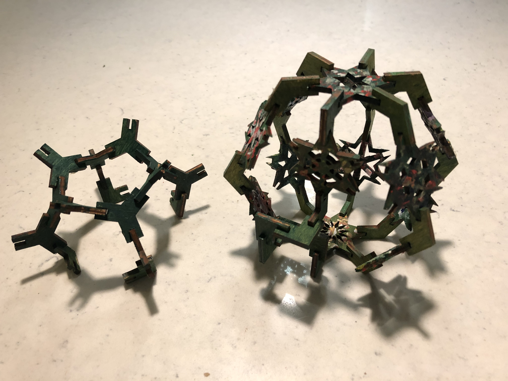
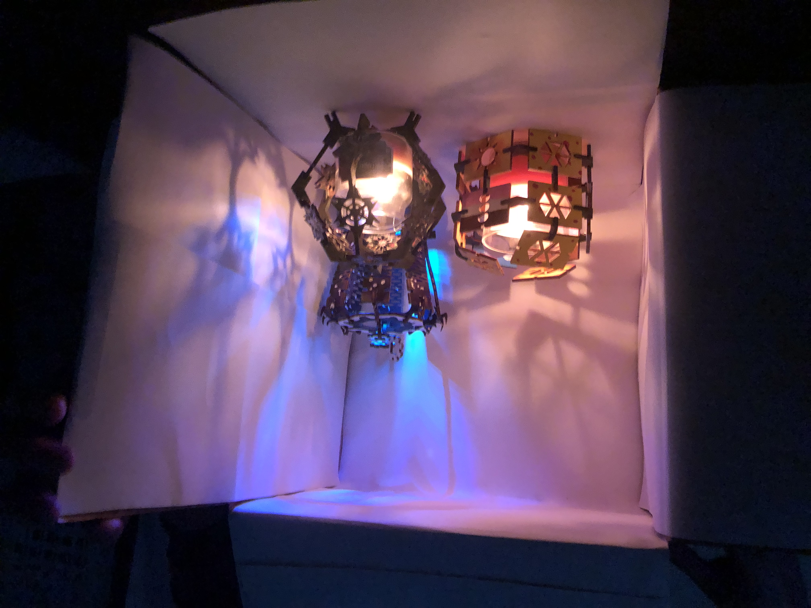
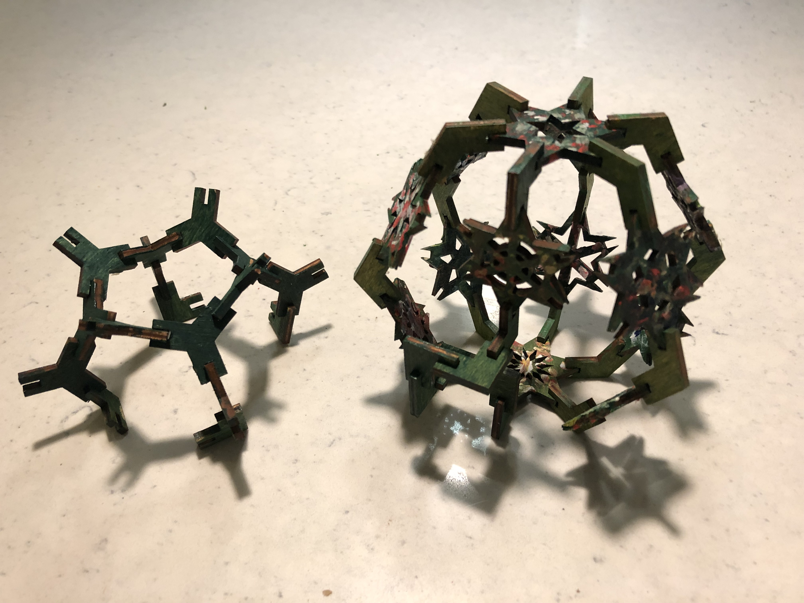
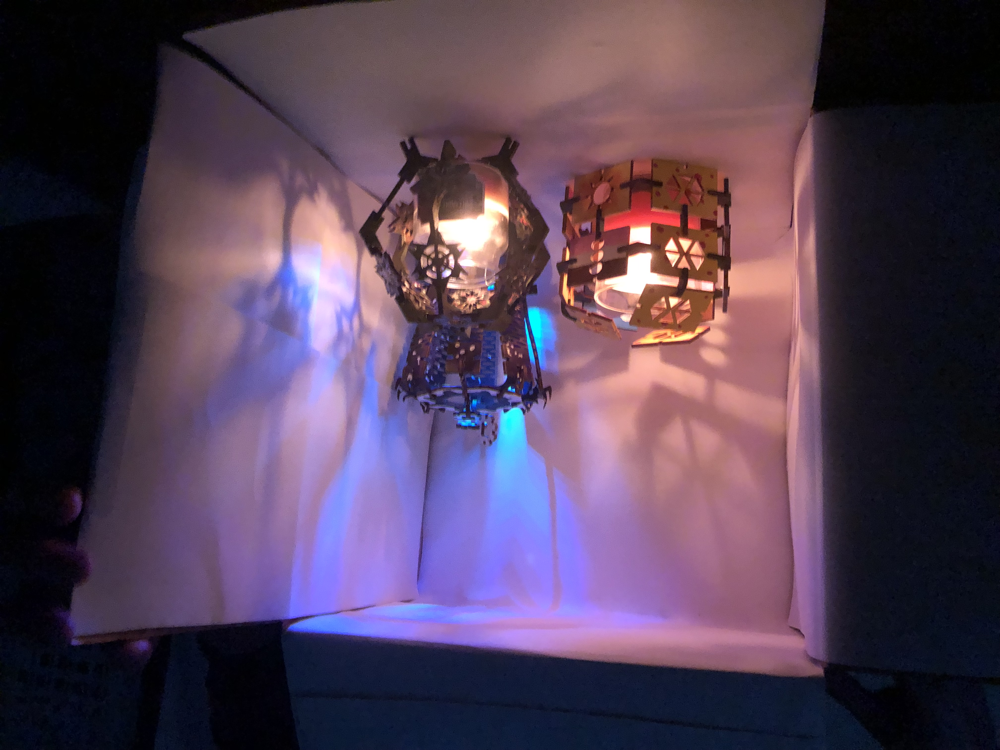

Phase 1

Note: the orignal photos were deleted so here are the photo's from our group colaboration. The purple stars, yellow snake moduarity and the green triangles are the ones I made.
In this exercise, we would be making these trianges that we would make so that they would for a connecting patern. So then we would make our own designs but also have it where we can also connect it with our groups designs as well.
Phase 2

So what I thought of when I was coming up with these fasteners was that I wan't to make some kind of locking mechanism. Something where in a practical environment it would be useful, yet something that can have an appealing asthectic quality towards them. I don't expect that this kind of fateners would be used in the real world, but it was a fun expariment to see what systems are used to contruct a type of fastherner or joint.
Phase 3

When I was designing the layout of these cut outs, I was thinking about something in which I light could be contained. During the time when I was in my group discussing the project, we were throwing around the idea of a lantern. Something in which a lightbulb could be placed inside the center of it. So while when comeing up with the look of the lantern, I was thinking more of a simple geometric shape since I was thinking that a more concrete shape would be the most stable one to assemble. Then later on, our group came with the plan to make our designs based on the 4 seasons but with our own personal taste.
 


